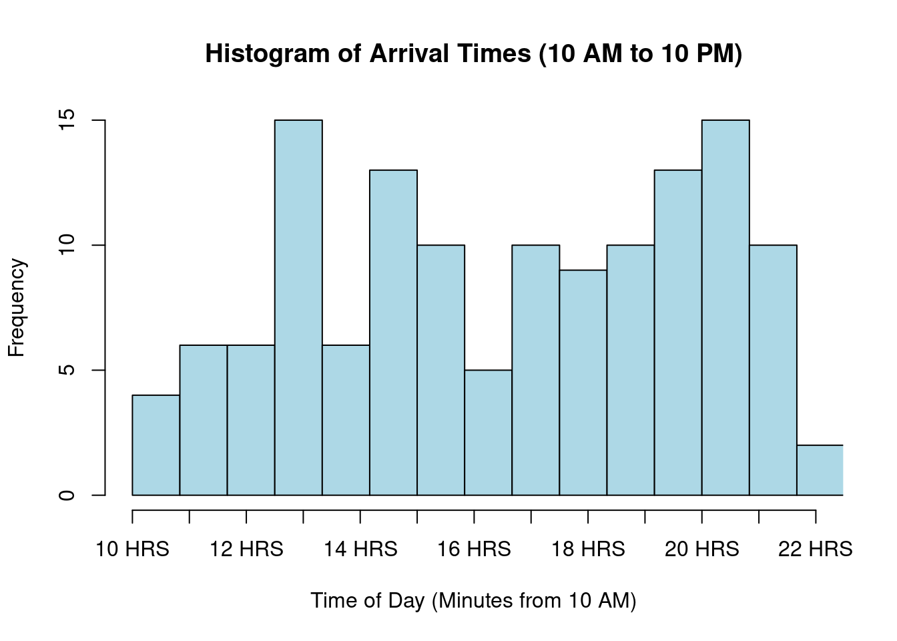
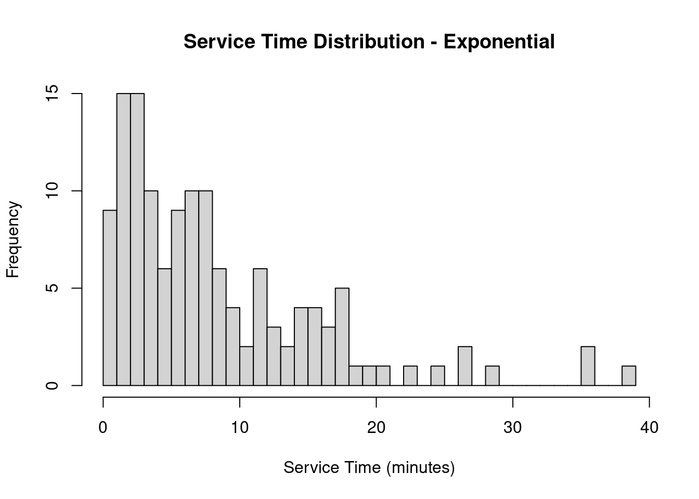
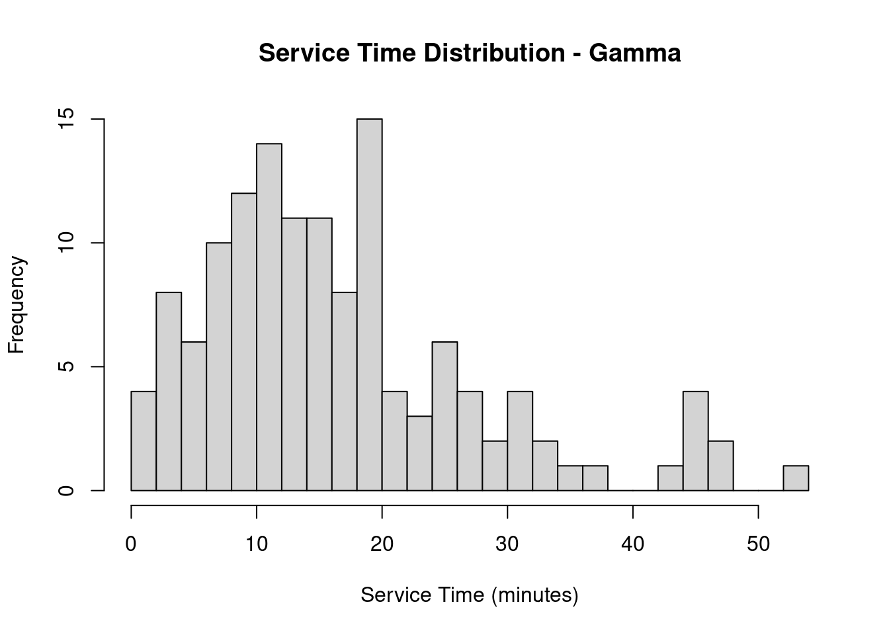

set.seed(123)
time_intervals <- c(0, 120, 300, 420, 720)
arrival_rates <- c(7, 12, 7, 17)
service_rates <- c(3, 3, 3, 3, 3, 3, 3, 5, 5, 5, 5, 5)
n_tables <- 5
#exponential rv
#inverse_cdf_exp <- function(lambda) {
# -log(1 - runif(1)) / lambda
#}
simulate_poisson_arrivals <- function(lambda, start_time, end_time) {
n_arrivals <- rpois(1, (lambda / 60) * (end_time - start_time))
sort(runif(n_arrivals, start_time, end_time))
}
arrival_times <- c()
for (i in 1:4) {
arrivals <- simulate_poisson_arrivals(arrival_rates[i], time_intervals[i], time_intervals[i + 1])
arrival_times <- c(arrival_times, arrivals)
}
arrival_times_in_day <- arrival_times + 600
hist(arrival_times_in_day,
main = "Histogram of Arrival Times (10 AM to 10 PM)",
xlab = "Time of Day (Minutes from 10 AM)",
ylab = "Frequency",
col = "lightblue",
border = "black",
breaks = 20,
xlim = c(600, 1320),
xaxt = "n")
axis(1, at = seq(600, 1320, by = 60), labels = paste(seq(10, 22), "HRS", sep = " "))
service_times <- sapply(arrival_times, function(t) {
hour <- ceiling(t / 60)
rexp(1, rate = service_rates[hour]/60)
})
sample_service_times <- rexp(100, rate = 0.2)
hist(sample_service_times, main = "Service Time Distribution", xlab = "Service Time (minutes)", breaks = 30)
current_time <- 0
downtime <- 0
queue <- c()
queue_lengths <- c()
busy_tables <- rep(0, n_tables)
waiting_times <- c()
for (i in seq_along(arrival_times)) {
next_arrival <- arrival_times[i]
if (all(busy_tables == 0) && current_time < next_arrival) {
downtime <- downtime + (next_arrival - current_time)
print(paste("Downtime:", downtime))
}
current_time <- next_arrival
busy_tables[busy_tables <= current_time] <- 0
if (any(busy_tables == 0)) {
next_table <- which(busy_tables == 0)[1]
service_time <- service_times[i]
busy_tables[next_table] <- current_time + service_time
print(paste("Seating customer at table", next_table, "at time:", current_time, "for service time:", service_time))
} else {
queue <- c(queue, current_time)
}
queue_lengths <- c(queue_lengths, length(queue))
while (length(queue) > 0 && any(busy_tables == 0)) {
next_table <- which(busy_tables == 0)[1]
wait_time <- current_time - queue[1]
waiting_times <- c(waiting_times, wait_time)
service_time <- service_times[i]
busy_tables[next_table] <- current_time + service_time
queue <- queue[-1]
queue_lengths <- c(queue_lengths, length(queue))
}
}[1] "Downtime: 5.46677992679179"
[1] "Seating customer at table 1 at time: 5.46677992679179 for service time: 5.37756100699234"
[1] "Seating customer at table 1 at time: 54.4000987429172 for service time: 29.2660112008524"
[1] "Seating customer at table 2 at time: 54.7937682364136 for service time: 30.7478795706773"
[1] "Seating customer at table 3 at time: 63.3726585656404 for service time: 0.0919825304299593"
[1] "Seating customer at table 3 at time: 66.1722017358989 for service time: 22.1753093591871"
[1] "Seating customer at table 4 at time: 68.7160082347691 for service time: 5.9994063526392"
[1] "Seating customer at table 4 at time: 81.308476254344 for service time: 23.8400601400974"
[1] "Seating customer at table 1 at time: 105.962088480592 for service time: 22.2985740742626"
[1] "Seating customer at table 2 at time: 107.090285327286 for service time: 1.34751781821251"
[1] "Seating customer at table 2 at time: 112.856074115261 for service time: 9.61337441578507"
[1] "Seating customer at table 3 at time: 114.820001441985 for service time: 31.4090867804348"
[1] "Seating customer at table 2 at time: 124.430463211611 for service time: 5.19892213866115"
[1] "Seating customer at table 4 at time: 127.570716035552 for service time: 37.1384457481985"
[1] "Seating customer at table 1 at time: 145.704004028812 for service time: 9.26439241540722"
[1] "Seating customer at table 2 at time: 146.480456516147 for service time: 4.72071493044496"
[1] "Seating customer at table 3 at time: 147.440054593608 for service time: 23.641988429332"
[1] "Seating customer at table 1 at time: 158.953428450041 for service time: 1.19342743419111"
[1] "Seating customer at table 1 at time: 161.692641363479 for service time: 8.06476882906"
[1] "Seating customer at table 1 at time: 172.048752713017 for service time: 18.8587968043032"
[1] "Seating customer at table 2 at time: 177.272581374273 for service time: 8.33161288872361"
[1] "Seating customer at table 3 at time: 179.025729470886 for service time: 15.064368098134"
[1] "Seating customer at table 2 at time: 186.392181166448 for service time: 3.77372776158154"
[1] "Seating customer at table 1 at time: 194.47037873324 for service time: 17.5370774225824"
[1] "Seating customer at table 2 at time: 194.618340446614 for service time: 3.80075641393609"
[1] "Seating customer at table 2 at time: 206.003274796531 for service time: 19.5815641238334"
[1] "Seating customer at table 1 at time: 217.931884448044 for service time: 6.4675165451105"
[1] "Seating customer at table 1 at time: 226.945563680492 for service time: 26.4095510720255"
[1] "Seating customer at table 2 at time: 235.291226478294 for service time: 6.36921296827495"
[1] "Seating customer at table 3 at time: 238.027043840848 for service time: 32.1013459173923"
[1] "Seating customer at table 2 at time: 244.326950116083 for service time: 2.91468232870102"
[1] "Seating customer at table 4 at time: 244.704613108188 for service time: 36.0625863713036"
[1] "Seating customer at table 2 at time: 247.535484270193 for service time: 0.601189089938998"
[1] "Seating customer at table 1 at time: 256.522716754116 for service time: 26.0688109873774"
[1] "Seating customer at table 2 at time: 263.184135183692 for service time: 3.99584489478282"
[1] "Seating customer at table 2 at time: 280.117076891474 for service time: 35.0291248394136"
[1] "Seating customer at table 3 at time: 282.413828121498 for service time: 35.2733666432982"
[1] "Seating customer at table 1 at time: 291.810656846501 for service time: 16.860871565284"
[1] "Seating customer at table 4 at time: 293.34436185658 for service time: 6.97505552321672"
[1] "Seating customer at table 5 at time: 298.968559792265 for service time: 65.9564959969292"
[1] "Seating customer at table 4 at time: 305.499740000814 for service time: 8.03412349894643"
[1] "Seating customer at table 1 at time: 314.627911197022 for service time: 22.0140346876326"
[1] "Seating customer at table 2 at time: 315.303798029199 for service time: 26.5784634455087"
[1] "Seating customer at table 3 at time: 324.783766753972 for service time: 12.83805295825"
[1] "Seating customer at table 4 at time: 331.916716843843 for service time: 3.91667430882966"
[1] "Seating customer at table 1 at time: 353.064008904621 for service time: 9.135777130723"
[1] "Seating customer at table 1 at time: 367.313758051023 for service time: 7.45500328019261"
[1] "Seating customer at table 1 at time: 395.870981477201 for service time: 69.2718978192577"
[1] "Seating customer at table 2 at time: 402.939325841144 for service time: 25.4805543824079"
[1] "Seating customer at table 3 at time: 420.18743199762 for service time: 12.9778218081841"
[1] "Seating customer at table 4 at time: 423.140133549459 for service time: 3.56350993060615"
[1] "Seating customer at table 2 at time: 438.216171464883 for service time: 1.00992881320417"
[1] "Seating customer at table 2 at time: 443.007349600084 for service time: 35.4408110068683"
[1] "Seating customer at table 3 at time: 447.313199965283 for service time: 23.6190270547917"
[1] "Seating customer at table 4 at time: 448.078496013768 for service time: 7.96626150794327"
[1] "Seating customer at table 5 at time: 448.452198277228 for service time: 19.3127057244232"
[1] "Seating customer at table 4 at time: 459.208707469516 for service time: 3.89562340825796"
[1] "Seating customer at table 4 at time: 464.128407281823 for service time: 11.2875140118028"
[1] "Seating customer at table 1 at time: 466.260690246709 for service time: 5.38930431380868"
[1] "Seating customer at table 1 at time: 472.515795081854 for service time: 15.4668777505483"
[1] "Seating customer at table 4 at time: 476.307335780002 for service time: 18.8607130505256"
[1] "Seating customer at table 2 at time: 485.930289379321 for service time: 0.745689572766423"
[1] "Seating customer at table 1 at time: 489.34853461571 for service time: 20.7693701450875"
[1] "Seating customer at table 4 at time: 502.315093372017 for service time: 0.394677462056279"
[1] "Seating customer at table 1 at time: 510.368669992313 for service time: 1.83645651116967"
[1] "Seating customer at table 1 at time: 512.316003260203 for service time: 12.4616640503134"
[1] "Seating customer at table 2 at time: 513.510660622269 for service time: 12.9893484743859"
[1] "Seating customer at table 3 at time: 515.946185127832 for service time: 44.9674936582275"
[1] "Seating customer at table 4 at time: 516.111972746439 for service time: 0.067513095214963"
[1] "Seating customer at table 4 at time: 519.847062095068 for service time: 0.0524084475545744"
[1] "Seating customer at table 4 at time: 523.05494167842 for service time: 20.3998099331906"
[1] "Seating customer at table 1 at time: 525.53937277291 for service time: 6.48801778256893"
[1] "Seating customer at table 2 at time: 530.846659750678 for service time: 5.64442333951592"
[1] "Seating customer at table 1 at time: 532.338832765818 for service time: 0.618712988146853"
[1] "Seating customer at table 1 at time: 533.944961316884 for service time: 6.20623606815934"
[1] "Seating customer at table 5 at time: 535.190891339444 for service time: 17.7977161099365"
[1] "Seating customer at table 1 at time: 541.353084524162 for service time: 15.3538267085876"
[1] "Seating customer at table 2 at time: 542.842485783622 for service time: 17.1176180872877"
[1] "Seating customer at table 4 at time: 545.294033903629 for service time: 17.0899244888401"
[1] "Seating customer at table 5 at time: 554.554902417585 for service time: 6.27365352230554"
[1] "Seating customer at table 1 at time: 560.033712470904 for service time: 0.823806777268531"
[1] "Seating customer at table 1 at time: 562.594972229563 for service time: 6.82980639673769"
[1] "Seating customer at table 5 at time: 564.87071915064 for service time: 52.390931230739"
[1] "Seating customer at table 1 at time: 573.451637970284 for service time: 5.50537564605474"
[1] "Seating customer at table 3 at time: 576.340717733838 for service time: 3.12316446751356"
[1] "Seating customer at table 1 at time: 584.785396819934 for service time: 8.38610093962368"
[1] "Seating customer at table 1 at time: 595.645005935803 for service time: 11.5582606620623"
[1] "Seating customer at table 2 at time: 599.996687779203 for service time: 8.77775465851469"
[1] "Seating customer at table 3 at time: 602.620494696312 for service time: 13.3473548474337"
[1] "Seating customer at table 4 at time: 603.831300982274 for service time: 7.2674945499748"
[1] "Seating customer at table 1 at time: 608.766339467838 for service time: 19.5799059613168"
[1] "Seating customer at table 2 at time: 614.368043798022 for service time: 1.22311357905907"
[1] "Seating customer at table 2 at time: 615.930577511899 for service time: 4.89580947160721"
[1] "Seating customer at table 3 at time: 617.027438390069 for service time: 32.8841826379077"
[1] "Seating customer at table 4 at time: 617.951534902677 for service time: 34.2225294987064"
[1] "Seating customer at table 5 at time: 619.534558388405 for service time: 0.290080465490181"
[1] "Seating customer at table 5 at time: 620.416676234454 for service time: 5.7071376722306"
[1] "Seating customer at table 2 at time: 621.899727783166 for service time: 8.01730342023075"
[1] "Seating customer at table 5 at time: 627.002130453475 for service time: 11.4027636269654"
[1] "Seating customer at table 1 at time: 633.054720405489 for service time: 13.6533000319572"
[1] "Seating customer at table 2 at time: 636.178882028908 for service time: 0.993181039061871"
[1] "Seating customer at table 2 at time: 639.640561658889 for service time: 19.7148924587187"
[1] "Seating customer at table 5 at time: 641.123321377672 for service time: 1.90680497680329"
[1] "Seating customer at table 5 at time: 646.342547591776 for service time: 17.7433912520459"
[1] "Seating customer at table 1 at time: 654.688290394843 for service time: 1.35638086728289"
[1] "Seating customer at table 3 at time: 655.884465510026 for service time: 2.68950804438593"
[1] "Seating customer at table 1 at time: 656.45875020884 for service time: 8.04612767882645"
[1] "Seating customer at table 4 at time: 658.302696333267 for service time: 18.4419685219577"
[1] "Seating customer at table 2 at time: 663.01930591464 for service time: 23.1458632339886"
[1] "Seating customer at table 3 at time: 663.716852855869 for service time: 2.56286640410651"
[1] "Seating customer at table 5 at time: 664.392011663876 for service time: 6.81471548974514"
[1] "Seating customer at table 1 at time: 666.541638043709 for service time: 23.1998856057575"
[1] "Seating customer at table 3 at time: 672.818795666099 for service time: 43.2329743553825"
[1] "Seating customer at table 4 at time: 685.940718236379 for service time: 15.8349437485065"
[1] "Seating customer at table 2 at time: 687.105066636577 for service time: 11.1691696189935"
[1] "Seating customer at table 5 at time: 687.418235144578 for service time: 3.7854823484389"
[1] "Seating customer at table 1 at time: 694.33145607356 for service time: 11.139534137639"
[1] "Seating customer at table 2 at time: 700.589940981008 for service time: 3.10010959102997"
[1] "Seating customer at table 2 at time: 704.318082011305 for service time: 6.46065386943519"
[1] "Seating customer at table 1 at time: 706.227371566929 for service time: 0.904252393171191"
[1] "Seating customer at table 4 at time: 706.342148249969 for service time: 1.54125247519959"
[1] "Seating customer at table 1 at time: 713.94657521043 for service time: 31.1860818326251"
[1] "Seating customer at table 2 at time: 715.265761041082 for service time: 24.8422919278195"
[1] "Seating customer at table 4 at time: 715.487093995325 for service time: 2.46457220951901"plot(queue_lengths, type = "l", xlab = "Time", ylab = "Queue Length",
main = "Queue Length Over Time", col = "blue", lwd = 2,
xaxt = "n", xlim = c(0, length(queue_lengths)))
axis(1, at = seq(1, length(queue_lengths), by = length(queue_lengths) / 12),
labels = paste(10 + (seq(1, length(queue_lengths), by = length(queue_lengths) / 12) - 1) / (length(queue_lengths) / 12), "HRS", sep=""))
avg_wait_time <- if (length(waiting_times) > 0) mean(waiting_times) else 0
cat("Average Waiting Time:", avg_wait_time, "minutes\n")Average Waiting Time: 16.10049 minutescat("Total Downtime:", downtime, "minutes\n")Total Downtime: 5.46678 minutes